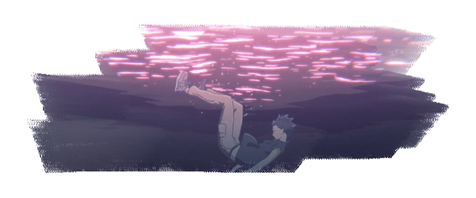

Composer Kensuke Ushio, recognizing the central role of sound in the film, gave importance to musical and non-musical elements, including silence. The song "lvs", played when Shōko is excluded from the class community, was recorded by putting a microphone inside a piano, obtaining a muffled sound in which the piano mechanics' noises are emphasized. This technique recreates for the viewer an effect that resembles Shōko's perception.
About Kensuke Ushio
Kensuke Ushio (Japanese: 牛尾 憲輔, Hepburn: Ushio Kensuke; born March 1, 1983) (stylized as kensuke ushio) is a Japanese composer, rock and EBM musician. He also releases work under the moniker Agraph. He is a member of Japanese rock band Lama. Together with Lama, he released two full-length studio records: New! in 2011 and Modanica a year later. Both albums charted on the Oricon Albums Chart. As an EBM musician, he released three albums, all of which peaked in the Japanese Albums Chart. He wrote and composed soundtracks for several anime television series and movies, such as A Silent Voice, Chainsaw Man, Devilman Crybaby, Liz and the Blue Bird and Dandadan.

"I wanted to make a movie that ultimately said 'it'll be okay'"
Interview
This english translation is provided by Ultimatemegax. "This is from the A Silent Voice “making of” book published by Kyoto Animation in 2016. I translated this for another site, but it never got ran on it. With the ongoing incident at KyoAni, I wanted to share some of these translations that were finished, but never seen publicly."
First, now that production on the film has finished, including sound production, what has been your reaction to finishing it?
Yamada: It feels like a pleasant accomplishment. Even before I had the privilege to direct A Silent Voice, I thought about working on something with a strong sound component. And I don’t mean presenting something that you could simply say as “beautiful music” or “nice melodies”; I mean some kind of sound that would appeal to someone’s instincts or the physical sensation of sounds. I thought about who I would need to speak out to in order to represent that and who “I really want to work with,” and as a result, I was truly able to work together with everyone. As all of the staff shared lots of common emotions, we were able to live up to the challenge of how we wanted to present the surface of sounds.
Tsuruoka: Once the film opened, I reached out to hear responses related to the sound of the film, but I was a bit perplexed to their impressions because I got reactions that were just “the sounds that should fit this film were naturally there.” While there were some that had “they were bitter because that’s what you desire in a film like this,” the consensus was that the sound felt natural. I’m not trying to exaggerate that by any means.
Ushio: Like Tsuruoka-san said, we steadfastly made the sound that we desired for the film. When I went to work with director Yamada and the studio, I felt it was a location brimming with creativity and so much energy from all the people she had gathered with similar feelings. Everyone could chase after the shape of sound they wanted in the film with truly no reservations. That is how we were able to achieve such a rich and pure result.
It appears like you structured this title around sound, director Yamada. Fundamentally, what was the reason for that?
Yamada: I began working on this film wanting to make a film where the audience felt something viscerally. They would sneak into the world that Shoya Ishida viewed and sense his own mental emotions. It started with me thinking about how I wanted to delve into how Shoko accepted sounds, but I wanted to attack that how sounds affect our vital organs and interact physically with us in ways beyond audition like the shape of odors and the shape of memories, so I constantly thought how best to represent that. Communication isn’t just words; it’s the unconscious presentation of things like line of sight and atmosphere. Since I felt A Silent Voice was a work that could play on all five senses, I chose to challenge it in that manner.
In what ways did you communicate that instinctive image?
Yamada: I’m not that great at putting what I’m thinking into words. There’s many times where I ask myself “how can I fundamentally convey that image?” Whenever I spoke with Ushio-san, I would talk until I was sure he understood 100 percent what I meant at that moment.
Ushio: You conveyed that immensely to me. For example, the direction of waves is absolutely a fundamental concept necessary to sound. We have to use waves as an intermediary in order to derive sound. As soon as you said that, I instantly agreed with you.
Yamada: It’s because the root of all physical phenomenon can be used as a way to represent something. Conversation itself may be light, but conveying something in the right form is a miraculous experience. That’s why when Tsuruoka-san said to us “Want to fit sound with the visuals with me?” we accepted your kind offer and gave it a try. Having Ushio-san by my side while working on it, there were many instances where we would start working and I would be vaguely thinking of things like “wouldn’t it be better to have a more positive sound here?” or “I think there’s too many sounds here” and not be able to put them into words, Ushio-san would say “please change this to a brighter chord here” or “there’s too many sounds, so please remove this.” It was a very mysterious and wonderful experience having someone peek into my head like that.
Ushio: YWhen two people have the same sense, they grow to rely on one another and can create something great. I wonder if that’s what Tsuruoka-san wanted us to realize when he asked us “please do this with me.”
Tsuruoka: That’s right. I think two people who create something by feeling and not simply theory is the best way to create something.